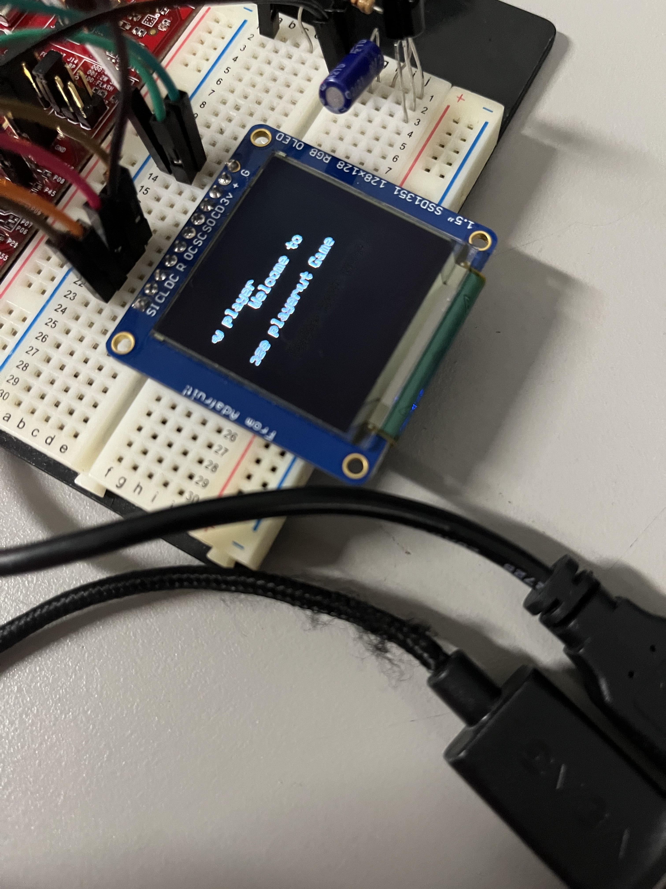

Project Introduction
Step into the future of gaming with our innovative Brick Breaker game, where traditional controllers are a thing of the past. Designed to harness the power of the CC3200's built-in accelerometer, this game transforms your physical movements into thrilling on-screen action. Tilt the board, and watch as the ball rolls in response, navigating through challenging obstacles to hit objectives and rack up points. Whether you're battling for a spot on the global leaderboard or enjoying a casual offline session, our game offers an immersive experience that tests your precision and reflexes. Get ready to tilt, roll, and score your way to victory!
Game Modes
Our Brick Breaker game offers two engaging modes to cater to both new and returning players:
- New Player: Jump right into the action without the hassle of setup. In this mode, a unique player profile is automatically generated for you. Your game data and scores are seamlessly created and stored in AWS, ensuring that your achievements are saved for future sessions.
- Existing Player: For players returning to the game, this mode provides the option to retrieve your player profile from AWS. Browse through the list of existing players, select your profile, and pick up right where you left off. Perfect for those looking to beat their high scores or continue their progress.
Choose your mode and start your adventure in our world of Brick Breaker—where every tilt and turn brings you closer to the top of the leaderboard!
Explore More
Interested in the technical details or want to contribute? Visit our GitHub repository to explore the code, report issues, or suggest improvements. Join us in enhancing the gaming experience!
Take a look at the exciting first screen of our Brick Breaker game, inviting players to start their adventure!
Video Demonstrations
Watch our Brick Breaker game in action! These videos showcase the gameplay and the unique features of our project.
Gameplay Overview
Explore the gameplay mechanics and see how players interact with the game using the CC3200's accelerometer.
Feature Highlights
Dive into the features that make our Brick Breaker game stand out, including real-time score tracking and AWS integration.
System Architecture
Our Brick Breaker game is built on a robust architecture that integrates various hardware and software components. Below is a block diagram and a detailed explanation of how each component is connected:
Here is how each component is interconnected:
- CC3200 Microcontroller and OLED: Connected via SPI (Serial Peripheral Interface), allowing high-speed data transfer for display updates.
- CC3200 Microcontroller and AWS: Connected through REST API/WiFi, enabling seamless data transmission to and from the cloud for real-time score tracking.
- CC3200 Microcontroller and Accelerometer: Linked via I2C (Inter-Integrated Circuit), facilitating accurate readings of tilt and motion for game control.
- CC3200 Microcontroller and IR Receiver: Connected using the NEC protocol, which is widely used for remote control systems, ensuring reliable communication.
- IR Receiver and IR Remote: Communicate through IR waves, allowing the user to interact with the game via the remote control.
Functional Blocks
AWS Integration
The game leverages AWS for robust cloud storage and data handling. We configure AWS to manage player profiles and game scores, ensuring data persistence across sessions. AWS is set up to trigger updates whenever a player achieves a new high score, which is then stored and can be retrieved in real time for leaderboard updates.
OLED Display via SPI
The OLED display is crucial for real-time game feedback. Connected via SPI (Serial Peripheral Interface), it offers high-speed data transmission allowing for quick updates on the screen. This setup displays game scores, player profiles, and other critical game information dynamically as the game progresses.
Accelerometer via I2C
The accelerometer is integral to the game's control mechanism. It captures the tilt and motion of the CC3200 board via I2C protocol, translating physical movements into game actions. This allows players to control the paddle in the game by physically tilting the board, providing an immersive gaming experience.
IR Communication
The IR receiver and remote communicate using IR waves, allowing for remote game controls. This setup enables players to make selections on the game's menu and other interfaces without direct contact with the board, enhancing the usability and accessibility of the game.
Technical Challenges
Throughout the development of our Brick Breaker game on the CC3200 microcontroller, we encountered several technical challenges that required innovative solutions. One of the main hurdles was managing the limited memory and processing power of the CC3200 while ensuring smooth gameplay and real-time data processing. Implementing efficient memory management techniques was crucial to avoid performance bottlenecks.
Additionally, establishing a stable and secure connection between the microcontroller and AWS posed challenges, particularly in handling the REST API calls over WiFi. Ensuring reliable data transmission without loss or corruption was paramount, especially when updating high scores and player data in real-time. We also faced complexities in calibrating the accelerometer accurately to translate physical tilts into precise in-game movements, which was critical for the intuitive gameplay experience our game offers.
Integrating the IR communication system required careful tuning to prevent interference and ensure that signals from the IR remote were decoded accurately by the IR receiver. Each of these challenges was addressed through rigorous testing and iterative development, allowing us to refine our system and deliver a seamless gaming experience.
Future Enhancements
We plan to expand the game's features, including multiplayer capabilities and improved user interface interactions through mobile apps or web services.
Finalized Bill of Materials (BOM)
The following table outlines the essential components used in our Brick Breaker game, along with their approximate prices and purposes:
| Component Name | Approx. Price | Purpose |
|---|---|---|
| CC3200 Microcontroller | $55 | Main controller for processing and IoT communications. |
| OLED Display | $29.95 | Displays game stats and player feedback in real-time. |
| IR Receiver | $1.50 | Receives signals from the IR remote for game control. |
| IR Remote | $38.49 | Allows players to interact with the game wirelessly. |
| AWS Cloud Services | Free Tier | Handles storage and processing of game data and scores. |
| Total Components | 4 | |
| Total Price | $124.94 |